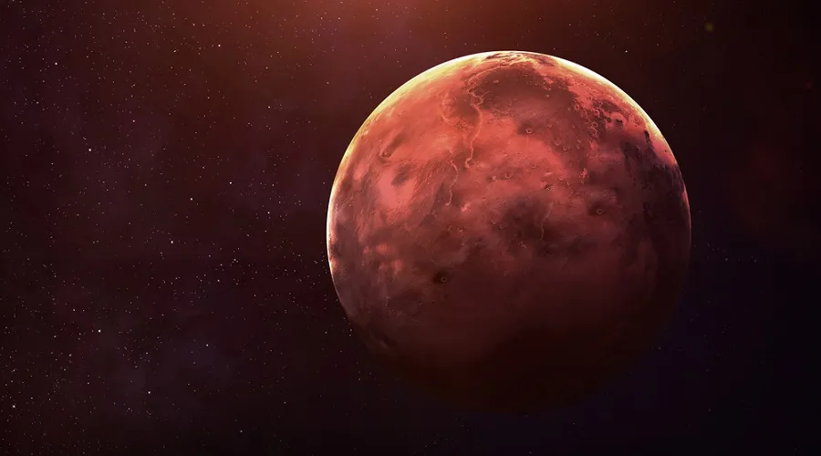
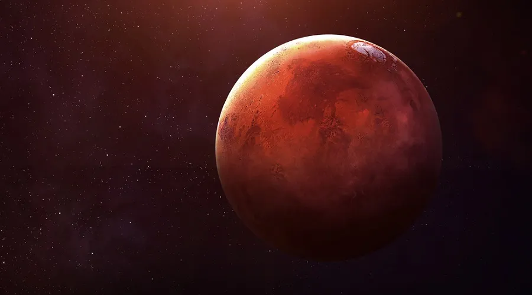
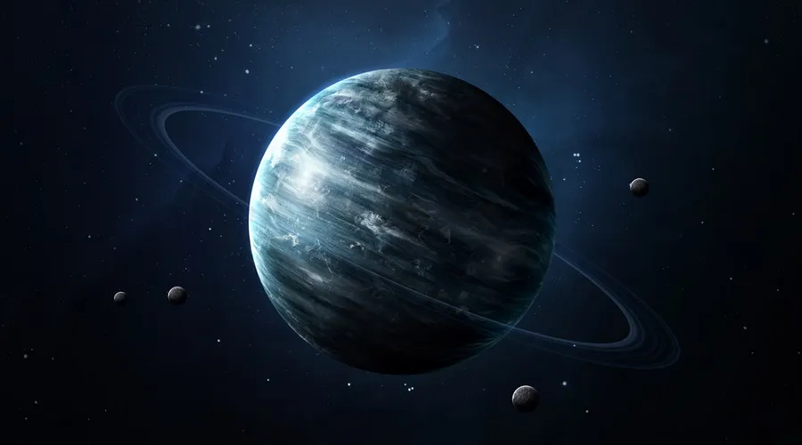
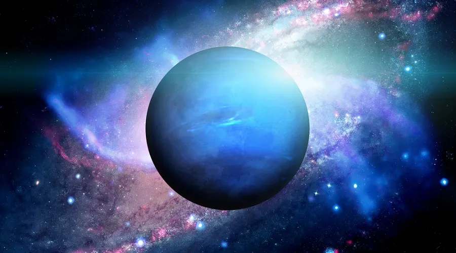

ASTRONOMIA INTERESSANTE
ASTRONOMIA INTERESSANTE
Nossa casa... O Sistema Solar
O Sistema Solar é um conjunto formado por oito planetas e outros corpos celestes, que orbitam o Sol, a sua principal estrela. Está localizado na Via Láctea, uma das galáxias que formam o Universo. São planetas do Sistema Solar: Mercúrio, Vênus, Terra, Marte, Júpiter, Saturno, Urano e Netuno.
Além deles, existem mais cinco planetas anões (Ceres, Plutão, Haumea, Makemake, Éris) e muitos outros astros, como satélites naturais, asteroides, meteoros, meteoroides e cometas. O Sol e todo o nosso sistema solar faz parte de uma galáxia, que se chama Via-Láctea.
1. Sol
O sol é uma estrela. A mais próxima da Terra e a que assegurou as condições necessárias de vida deste planeta. Ele é basicamente uma bola de gás incandescente a temperaturas inimagináveis (5.785 K, temperatura efetiva) e, embora esteja a milhões de quilômetros da terra (1,496 x 10³³ km) tem fortes influências sobre nós.

1. Mercurio
Mercúrio é o planeta mais próximo do Sol. Esse planeta é capaz de refletir cerca de 12% da luz solar, sendo um dos astros mais brilhantes vistos da Terra. Encontra-se a cerca de 57.910.000 km do Sol. Sua superfície é repleta de crateras, enquanto seu núcleo é rico em ferro, e a espécie de atmosfera existente no planeta é composta, em sua maioria, por hélio (98%) e hidrogênio (2%). A temperatura do planeta durante o dia atinge 430ºC.

2. Venus
Vênus é o segundo planeta em relação ao Sol, conhecido também como Estrela D'alva, por ser, muitas vezes, um dos astros mais brilhantes no céu no período da noite. Encontra-se a aproximadamente 108.200.000 km do Sol Possui uma atmosfera 92 vezes mais densa que a atmosfera terrestre, estando o planeta quase sempre envolto por nuvens. Essa atmosfera é composta especialmente por CO2, o que contribui para que a temperatura do planeta chegue a 420graus.

3. Terra
O planeta encontra-se a uma distância favorável do Sol, cerca de 149.600.000 km. Seu dinamismo proporcionado pela radiação solar, forças da maré e o calor proveniente do seu núcleo o tornam um planeta único no Sistema Solar. Sua temperatura média é de 14ºC, e apenas 60% da energia solar é absorvida Possui um satélite natural, a Lua, com rotação sincronizada à da Terra.

4.Marte
Marte é o quarto planeta segundo à distância do Sol, possui o clima mais parecido com o da Terra, assim como o seu movimento de rotação. A observação da sua superfície levou alguns cientistas a considerarem possível existência de formas de vida no planeta. Sua superfície é caracterizada pela presença de crateras e poeira, composta por magnetite, que confere ao solo marciano uma cor avermelhada. E a sua temperatura " podem variar entre -76ºC e -10ºC."

5.Jupiter
Júpiter é conhecido como o “gigante gasoso”, sendo o maior planeta do Sistema Solar, além do planeta com maior velocidade de rotação. Apesar de ser o planeta de maior massa, ele não é o mais denso, visto que é composto por gases, especialmente hélio e hidrogênio. Acredita-se que o planeta possua um núcleo rochoso e não se sabe ao certo se possui uma superfície definida.

6.Saturno
O planeta gasoso é conhecido por seus anéis e acredita-se que esses são compostos por gelo, devido ao seu intenso brilho, podendo refletir até 80% da luz solar. O planeta possui um único grande satélite conhecido como Titã. A atmosfera do planeta é constituída, principalmente, por hidrogênio e hélio. A densidade do planeta é bastante inferior à da Terra, por causa da sua composição. Há indícios de que o planeta possua um núcleo sólido, assim como Júpiter.

7.Urano
Urano é um planeta de pouca luminosidade e encontra-se a cerca de 2.880.990.000 km do Sol. Apresenta massa menor que Júpiter, porém apresenta um núcleo mais denso, o que possibilita dizer que talvez possua um núcleo rochoso. "O planeta possui anéis, os quais foram descobertos em 1977 e são bastante opacos à luz. Além disso, apresenta cerca de 27 satélites naturais e cerca de 27 luas. Sua atmosfera é composta por hidrogênio, hélio e metano, sendo esse último o responsável pela sua cor azulada. A temperatura no planeta é de aproximadamente -218ºC.

8.Neturno
Netuno é o planeta mais recentemente descoberto. Sua presença foi notada no ano de 1845. Encontra-se a aproximadamente 4.504.300.000 km do Sol. O planeta possui características semelhantes às de Urano em termos de massa e composição atmosférica. Sua atmosfera é composta por hidrogênio, hélio e metano, e possui temperatura média de -218ºC. Acredita-se que seu interior seja semelhante também ao de Urano Netuno possui um sistema de anéis. Além disso, apresenta treze satélites, sendo o seu maior conhecido como Tritão.